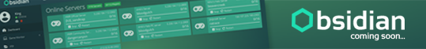
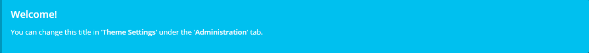

Welcome
Thanks for Downloading Obsidian Theme

This document will guide you through the process of installing the theme and customizing it according to your needs. It will also give some brief details about the theme's features and credits. This theme designed for Open Game Panel Website. A special thanks goes to OGP Team for creating such an awesome forum script.
We did and made this theme for free by our love & our learning :) . I know, this documentation looks not good, maybe xD
Details
Author: HMR
What is HMR ? Why should i care ? Well HMR is a small web team. We're here to make something. Making Community, Learning, and much more. Help us growing the community if you want to support us. For more info/contact,
You can join our official discord Channel : https://discord.me/HMR or https://discord.gg/PAAHDc5
License
Custom License
- User may edit the item, but can't replace Our Theme Copyright & OGP Copyright.
- User can't re-distribute the theme's copy for free or paid.
- User should not copy any feature of this item.
- User need confirmation with us before taking theme as business and removing copyright mark (footer, header component, etc.)
Theme Features
The theme have many features, lets talk about them one by one.
- The theme makes UI more clean than default.
- The theme was used and modified from our previous theme, Flat. With more improve, stability, new features to try out.
- Nearly 97% Image Icons have replaced by FontAwesome icons.
- The theme supports all newer versions of browsers.
- Expandable Sidebar Menu & Sub Menu!
- New Profile Image system, By using Cookies in your browser.
- Attractive JQuery Drop down menu, Button's hover, Animated CSS3 GO-TO-TOP icon.
- New Welcome Message Box!
- And addition customization for your personalization in extras options!
Installation Guide
This guide will show you how to install Obsidian Theme in your OGP Website
- Your OGP panel must be equal to 3373 or higher version.
- You need to have full access controls in the OGP panel's File.
- Your OGP Panel atleast have 7-10 MB Disk space.
- Admin access in your OGP Website.
- Extract the zip file.
- Copy everything inside the folder, navigate to your OGP Panel's root theme folder and paste there.
- Once the pasting process completes, login to your OGP Panel.
- Navigate to Administration > Theme Settings, Change the theme to "Obsidian" and save it.
- That's all, now you would have Obsidian Theme in it. ENJOY!
Customizations
Pick & Edit your personalization.
Default Settings
Welcome Messages, Linking, etc.

It's cool, right? You can add your welcome message, too! Just follow the steps, below.
- Simply, You need to have admin's rights. Try login with your admin account
- Then, Go to Administraion > Theme Settings.
- After that, Navigate to "Theme Settings" and make sure "Welcome Title" setsON.
- Then, you can change the default Welcome Messages, to your own messages
- Lastly, If you want to have same label notification. you need to write codes, below here
Extras
Favicon, Login Background Image, Background Blur Effect, Logo, Loading Bar.
"Little Addition ? meh, i guess so. But at least, You can customize for sure. Continue for Tutorials!"
TUTORIALS
- Simply, You need to have admin's rights. Try login with your admin account.
- Go to Administraion > Theme Settings.
- Navigate to "Extras Options"
- Change the default settings to your personalization
- Make sure, you located the files correctly. Ex. ("themes/Obsidian/images/bg.jpg")
- I can't explain much for more details. Just try save and see your own result :).
People Who made Obsidian Theme possible :
- HMR Dev Team - For creating the best possible theme for OGP Website.
- OGP Team - For creating such an awesome Game Panel Hosting Server
- Dave Gandy - For crafting great FontAwesome Icons
- oNdsen - For helping us with some the current OGP and our theme issues.
- Codrops - For jquery tabstylebar used in this documentation & other tutorials
- Envira - For again some nice tutorials designs (like JQuery dropdown menu)
Please spread this theme by sharing it among your friends if you really like the theme. And support us in discord :)